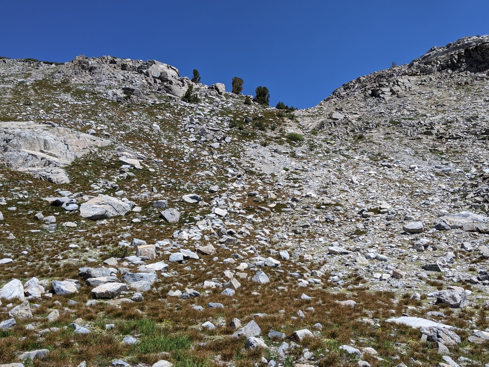
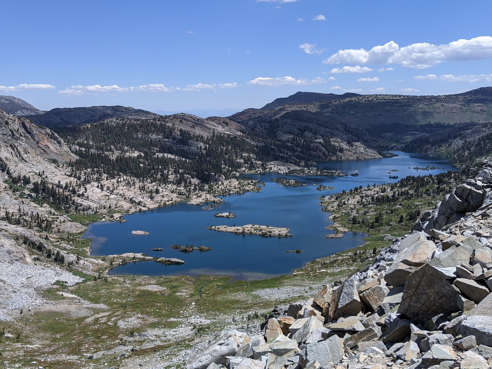
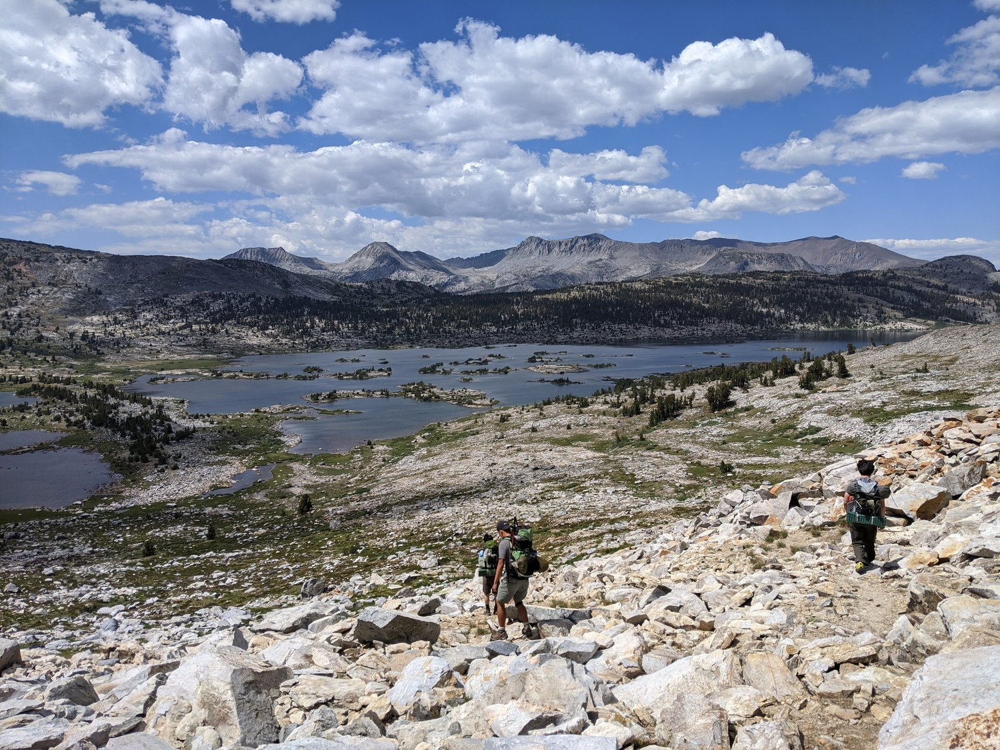

Ediza Lake, Nydiver Lakes, Whitebark Pass, and Thousand Island Lake
Youtube videoParticipants: myself, Brandon Guo, Isaac Li, and Zachary Wang.
A really fun three day trip exploring some beautiful terrain: interesting but, for the most part, easy cross country walking. As always, the Ritter Range is incredible and adds an unusual volcanic flavor to an otherwise granitic Sierra Nevada. I had an opportunity to revisit Ediza Lake, the lake that was part of my first introduction to the High Sierra nearly six years prior.
We left San Jose at around 5 in the morning. Fortunately, nobody woke up late.
Fast forward... we made it to Mammoth at around 11:30, just before our reserved shuttle reservation time window of 12 pm - 1 pm. I had some time to get a very delicious cheesesteak from a foodstand.
{kind=link}
Waiting for the Reds Meadow Shuttle
The shuttle line was long, but the shuttle squeezed in more people than we could imagine. We managed to be at Agnew Meadows by around 1 pm. We set off a quick pace along the River Trail (as opposed to the High Trail/PCT), but disaster struck early as Brandon rolled his ankle within the first fifteen minutes! We popped him a few pills and set off again, but this would continue to be a small issue throughout the next three days for him.
{kind=link}
Fixing up the ankle
Interesting note: we saw a lot of Indian backpackers on the trail to Ediza Lake, and also a couple on the trail to Thousand Island Lake. This is compared to the almost 100% white backpackers that you would see elsewhere in the Eastern Sierra. I am glad that we get to see more and more diverse ethnic groups out in the wilderness, and I suppose the increased diversity will inevitably appear first in the most popular locations. After all, the Ansel Adams Wilderness was what attracted me to my first backpacking trip. :)
After the short descent into the San Joaquin River valley, we began the gentle climb into the Shadow Creek valley. Again, trouble struck early as Zachary began experiencing a variety of interesting ailments, which also became an amusing theme throughout the next three days for him.
{kind=link}
{kind=link}
Indigestion strikes: do you think I can poop here?
Before long, we passed Shadow Lake. We did not take many stops here since the mosquitoes started to get pretty bad.
{kind=link}
The beautiful Shadow Lake, always hidden behind some trees if you stay on the trail.
The mosquitoes did not get any better as the afternoon progressed and we ascended higher. Zachary started having a tougher time - probably needed to exercise more!! But it was not too bad, we made it to Ediza Lake in the end. Right before Ediza Lake, there was a trickier stream crossing. (Tricky if you want to make it without getting your feet wet that is.) Zach fell in, which was really quite a shame.
But watching as the beautiful Ediza Lake unfolded around the next bend made the interesting day worth it!
{kind=link}
{kind=link}
The sun disappearing behind Ritter
At the inlet of Ediza Lake, there are one or two tricky streams that need to be crossed in order to get to the legal camping area. Definitely takes some balance to avoid getting the feet wet.
{kind=link}
It's a little bit of a struggle finding a good camping site at Ediza Lake, in my opinion. It may be advisable to go further to the northwest side of the lake in order to find some nice spots, but we were too tired and settled for an interesting set of sites perched on a rocky ledge above the lake. It certainly made for a quite a view of the Minarets.
{kind=link}
My 7-year-old tent - also its second time at Ediza Lake
That night we ate some tasty ramen and went to bed quickly.
The next morning's sunrise was beautiful as expected.
{kind=link}
Brandon and Mt. Ritter
{kind=link}
The Minarets and another campsite
We took some time to clean up and get going. We first went back to the inlet stream to get some water.
{kind=link}
Ritter and Banner above the inlet stream of Ediza
Our choice of approach to Nydiver Lakes was the direct ascent upwards from the northern side of Ediza Lake. Certainly, there are easier methods: allegedly there is a use trail that splits from the Shadow Creek trail east of Ediza Lake; one can also go via Roper's High Route towards the Ritter-Banner saddle before cutting east to Nydiver Lakes.
Our route was steep but not that rocky: there was a lot of grass on the slope to keep things stable. However, the rocks were generally loose and unreliable. It took us a long time to make it to the top, where there was a small tarn. On the way up, we had to pause for a very long time because a mosquito flew into Zach's ear. It would ultimately stay in his ear (alive) for several more days.
As we ascended higher and higher, the views of the Minarets and Ediza Lake became more and more expansive.
{kind=link}
{kind=link}
Zach and Isaac navigating the slope

One of the looser sections that required some care
{kind=link}
The view from the top, next to the tarn just south of the easternmost Nydiver Lake.
We took a short break at the tarn. (Not that we hadn't been taking many breaks: it took nearly two hours just to walk the quarter mile up from Ediza Lake.) I took this opportunity to poop, doing so with a perfect view of the Minarets.
{kind=link}
Banner from the tarn just south of the easternmost Nydiver Lake.

Relaxing with the perfect view
{kind=link}
The alpine wildflowers were in full bloom.
It was a gentle walk through grassy meadows to reach the westernmost Nydiver Lake, where we would ascend Whitebark Pass. Along the way, we met a fisherman who was on his fifth or sixth day with his two dogs, fishing all the lakes that he walked past. His two dogs kept us good company as we filtered water.{kind=link}
Banner above the middle Nydiver Lake
{kind=link}
Ritter and Banner above the westernmost Nydiver Lake
On the way to the base of Whitebark Pass, we were viciously attacked by dense swarms of gnats that lived in between the talus next to the lake. It was very traumatizing. The way up the south side of Whitebark Pass is a walk in the park: just take the gentle (actually quite steep) grassy slope on the western side. Isaac rather stupidly took the eastern side with all the loose talus and hurt his hand. Actually, there is also a use trail, but it is totally unnecessary and actually looser than the surrounding grass.

{kind=link}
The south side of Whitebark Pass
{kind=link}
More wildflowers
{kind=link}
A beautiful photo of Brandon (?), Nydiver Lakes, and the Minarets that I snapped from the top of Whitebark Pass.
From the top of Whitebark Pass, we could see Garnet Lake and Thousand Island Lake. Banner Peak loomed above us, closer than ever before. The north side of the pass was much steeper and rockier. It was very daunting as we looked down from the top. We spent some time contemplating our fates (joking) as I tested the safest ways down from the pass. None of the ways down were that great. I'm not able to find a consensus online about the optimal route, so please let me know if that exists.

{kind=link}
Garnet Lake
{kind=link}
Banner Peak from Whitebark Pass
Ultimately, my determination of the safest path was straight down the middle. There, the talus was larger and more white (and hence, more stable). We made it down extremely cautiously and mostly without a hitch. It was one of the looser passes that I've gone down, which is probably characteristic of the whole region.
{kind=link}
Looking up towards Brandon making his way down carefully
{kind=link}
Looking back towards the north side of Whitebark Pass
The rest of the way towards the saddle between Garnet and Thousand Island was gentle and grassy. Along the way, a very fast SHR hiker zoomed by us. He was doing the Reds Meadow to Twin Lakes section, although he was stopping at Saddlebag and not doing Sky Pilot Col. We were all very impressed by his pace.
{kind=link}
Banner Peak and the wildflowers that were blooming
{kind=link}
Thousand Island Lake from the saddle
We definitely took our luxury time for the rest of the way to the campsites on the north shore of Thousand Island Lake. We ate lots of snacks and enjoyed the beautiful scenery. At the southwestern corner of Thousand Island Lake, there was a clear use trail that we followed all the way to the outlet, where we camped. (We did lose the use trail at the northwestern corner of the lake though.)

{kind=link}
Descending the saddle to Thousand Island Lake
{kind=link}
Walking across the beautiful meadows on the northwestern side of the lake (of course, spreading out in an LNT conscious fashion :D)
The closer we got to the outlet, the more people there were. We were pretty much seeing people every three minutes, even though it was a Monday evening. It was a little bit of a struggle to find a nice campsite with all the people, so we were forced to go higher above the trail and the lake. This was okay though.
{kind=link}
The view from our campsite
We took a little dip in the water to clean our legs. Then we all had a big dinner to finish off the rest of our food. Afterwards, we played a little BS poker and then went to sleep. There wasn't enough space to put up the rainfly, so Brandon and I slept under just the tent mesh. It was a little unnerving to watch the mosquitos all gather on top of the mesh as we were falling asleep though. Still, it wasn't the worst I've ever seen.
{kind=link}
The next morning, I was a little too lazy to get up for the sunrise. I was only able to watch it through the mesh, which was okay. We got packed as quickly as possible and set off at a very high speed to try and get home before dinnertime. That day we completed the 8-9 miles back to Agnew Meadows at an average speed of 2.5 mph, taking an astonishing zero breaks beyond sips of water. To be fair, the mosquitos were starting to get so annoying that it was impossible to stop.
{kind=link}
The classic view in the morning
We took the High Trail (PCT) on the way back, which was honestly stunning. However, we were too focused on the mosquitos (and getting home) to really fully enjoy the expansive views of the Ritter Range. I would recommend doing the High Trail on the way to Thousand Island Lakes and maybe doing River Trail on the way back. :)
{kind=link}
Beautiful lupine on the High Trail with a view of the Ritter Range
{kind=link}
The last stretch at Agnew Meadows before the shuttle bus
At Mammoth Lakes, Zach went to a first aid station to try and get the mosquito out of his ear. However, even they were too scared to try and dig it out, saying that it was "too deep". I think Zach would not get it out until one or two days later.